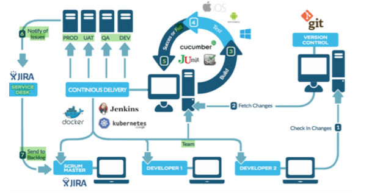
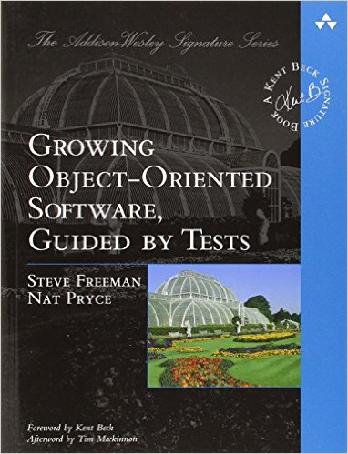

Test-Driven Design


Tim Schraepen & Wouter Groeneveld
12/12/2016
Introductie
Wouter
Prato, brood bakken, PXL, ...Tim
Cegeka, LeanCoffee Leuven, PXL, ...Doel
- Jullie zelfzeker maken in TDD
- Zodat jullie dit kunnen overbrengen aan jullie leerlingen
- Door middel van TDD in jullie lessen te verwikkelen
| 9:10 | Laptop setup double check |
| 9:20 | Unit Testing |
| 10:00 | Oefening: Basic Unit testing (JS) |
| 11:00 | Unit Testing en TDD |
| 11:30 | Oefening: Legacy Code 1 (PHP) |
| 12:00 | Lunch |
| 13:00 | Oefening: Legacy Code 2 (PHP) |
| 13:30 | Soorten testen |
| 14:00 | Oefening: Integrated TDD (Java) |
| 16:50 | Wat hebben we geleerd? |
TDD Deel 1:
Unit testing

Wat is Unit Testing
- Test Harnas
bvb. JUnit, MSTest - Assertion Framework
bvb. Assert.AreEquals(expected, actual); - TDD
Waarom unit testen?

Waarom unit testen?
- Early Feedback!
- Denk in code vanuit API standpunt
- Makkelijk voor pair om te volgen
- Alle mogelijke paden gedekt
- Documentatie
Oefening: basic testing in Javascript
makkelijk genoeg voor alle niveau's
Oefening 1: speculaas
Unit testing in JS

describe("A suite", function() {
it("contains spec with an expectation", function() {
expect(true).toBe(true);
});
});
Unit testing in JS
Hoe runnen? runtests.html

Eigenschappen van een goede test
- Ontdek sneller bugs
- Leesbaar
- Geautomatiseerd
- Snel & gefocuset (test 1 ding)
- Herhaalbaar
- Volgorde onafhankelijk
- Losgekoppeld van de implementatie
- Productie code makkelijker wijzigbaar
Geautomatiseerd

Travis CI live demo
Geautomatiseerd: build lifecycle
Living Documentation

Losgekoppeld van implementatie
Test Driven Development (TDD)

En wat is refactoring?
Structuur veranderen,
zonder inhoud te wijzigen!
Voel jij je veilig genoeg zonder testen?
TDD: "bugfix" edge case
Live Demo in C#Unit testing in C#
[TestFixture]
public class MyTestClass {
[Test]
public void SomeMethodShouldReturnTrueIfSomeCondition() {
var result = SomeMethod();
Assert.That(result, Is.EqualTo(expected));
}
}
Unit testing in C#
Gebruik tools van IDE:
Oefening: Legacy code in PHP
Legacy Code oefening
Unit Testing in PHPUnit
public function testStub()
{
$mock = $this->createMock(SomeClass::class);
$mock->method('doSomething')->willReturn('foo');
$this->assertEquals('foo', $mock->doSomething());
}
Unit Testing in PHP
Hoe runnen?
phpunit [dir]
phpunit dir/testfile.php
PHPUnit 4.3.5 by Sebastian Bergmann. ....................... Time: 105 ms, Memory: 2.75Mb OK (23 tests, 25 assertions)
Code Retreat oefening
JavaJavaScript
C# .NET
PHP
- Write exactly one new test. It should be the smallest test which seems to point in the direction of a solution
- Run the test to make sure it fails
- Make the test from (1) pass by writing the least amount of implementation code you can IN THE TEST METHOD.
- Refactor to remove duplication or otherwise as required to improve the design. Be strict about the refactorings. Only introduce new abstractions (methods, classes, etc) when they will help to improve the design of the code.
- ONLY Extract a new method if there is sufficient code duplication in the test methods. When extracting a method, initially extract it to the test class (don't create a new class yet).
- ONLY create a new class when a clear grouping of methods emerges and when the test class starts to feel crowded or too large.
Soorten testen

Unit Testing
- Onafhankelijk van externen (db, webservice, ...)
- Snel!
- Véél testen
- Test Happy Path & Edge Cases
- "Actieve vijand van de code"
Integration Testing
- Test geïntegreerd met externen (db, webservice, ...)
- Test integratie twee verschillende lagen
- Trager dan unit tests
- Minder test cases
Integration Testing
Test doublesIntegration Testing
- Mocks
- Stubs
- Spies
Details: zie Mocks aren't stubs by Martin Fowler.
End to End Testing
- Test hele applicatie!
- niet alle limieten
- traag, moeilijker onderhoudbaar
- Test integratie alle lagen
Voorbeeldje/demo
Eventueel mee volgen intdd-course/labs/integrationtest-livedemo
Oefening: Integrated TDD met Java
En nu is het aan jullie!
Om jullie te helpen om sneller te ontwikkelen:
Shortcuts cursus met IntelliJ
ReSharper cheat sheet keymap
Unit Testing in Java
http://junit.org/junit4/javadoc/latest/
http://joel-costigliola.github.io/assertj/
import static org.assertj.core.api.Assertions.assertThat;
@Test
public void methodShouldReturnTrueIfBehaviourCorrect()
{
bool result = method();
assertThat(result).isTrue();
}
Unit Testing in Java
Hoe runnen? Gebruik tools van IDE:
Resources
Boeken
Growing Object-Oriented Software Guided by Tests
Boeken
Clean Code

Boeken
Working Effectively With Legacy Code
Wat hebben we geleerd?
Tim en Wouter zijn BAZEN
Test Driven Development zorgt voor:
- Beter design (loose coupling, single responsibility)
- Leesbare code
- Een vangnet voor Legacy code
Test Driven Development is...
- ...helemaal niet zo scary!
- ...toegankelijk voor studenten
- ...zoals we het vandaag gezien hebben overdraagbaar op studenten